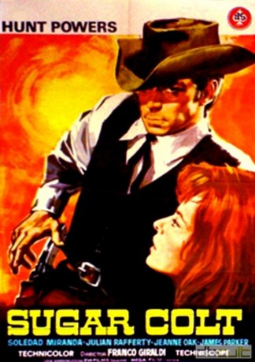

#6004 Rocco, der Mann mit den zwei Gesichtern
 
 IMDB-Wertung: 6.4 / 10
IMDB-Wertung: 6.4 / 10  Metascore: 0
Metascore: 0 
In order to avenge a friend and to fulfill his last wish, Rocco has to find out what happened to an army corps that has mysteriously disappeared. He therefore puts on the disguise of a doctor and starts investigating in a somewhat uncomfortable town.
Jahr: 1966
Dauer: 100 Minuten
FSK: 16
Land: Italien Studio: Constantin FilmTonspuren: DD1.0 - ,
Untertitel: Deutsch,
Auflösung: 1080p (1920x816) Größe: 6717 MB
Genre: Komödie, Western, Liebe
Regisseur: Franco Giraldi
Drehbuch: Joby Harold
Soundtrack:
Darsteller:
Datei: X:\HD-Western-1960-1979\Rocco, der Mann mit den zwei Gesichtern (1966, FSK16, 1920x816).mkv seit 18.04.2017
Festplatte: HD Eastern+Western
 Es gibt insgesamt 110 Filme in der Gruppe 'HD-Western-1960-1979'
Es gibt insgesamt 110 Filme in der Gruppe 'HD-Western-1960-1979'